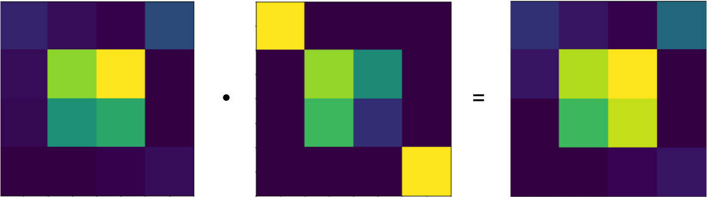
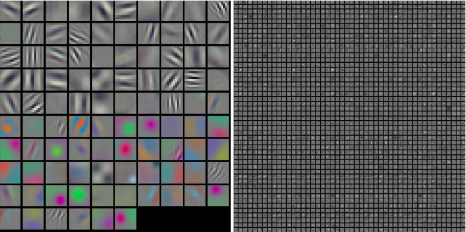
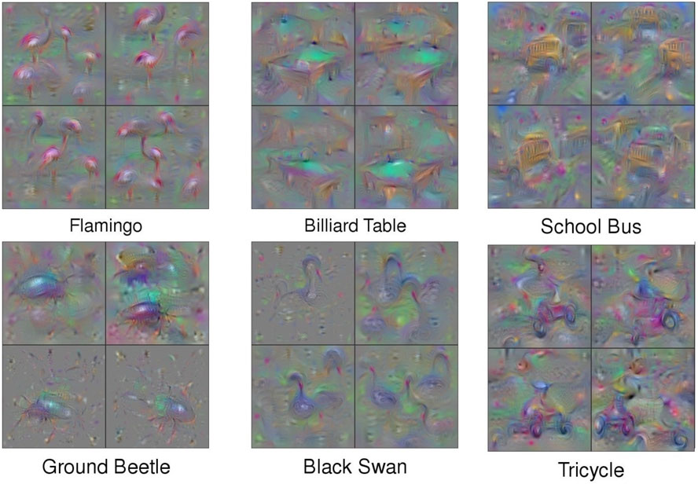

A feedforward network or artificial neural network (ANN) can be described fairly briefly. An ANN is a glorified composite function, \( f(g(h(x))) \) of matrix multiplications (\( h(x) = \textbf{W}\textbf{x} \)) that are summed \( g(x) = \sum\limits_{n=1}^{n}\textbf{W}\textbf{x} \) and fed as inputs to a non-linear activation function \( f(x) = \frac{1}{1 + e^{-g(x)}} \) (eg. sigmoid) with each neuron having randomly initialised weights that are optimised to minimise some defined objective function. So each neuron computes the weighted sum of its inputs, a non-linearity is then introduced and quite often for classification problems, a final softmax function, also known as logistic is used to constrain the output values to [0-1] which are readily interpreted as probabilities. This simple model results in a universal classifier and given multiple hidden layers can represent any Boolean function (AND, OR, XOR..) and is in fact, a universal appoximator.
So what do we need to learn? We need to learn the weights. Like any linear classification or regression task, given a set of inputs and their labels/values \( (x,y)\) we want to learn a function \(g(x)\) that maps \(x \Rightarrow y \). To do this, we define a cost/objective function (\(F(x)\)) which specifies what we want to achieve, i.e. We want to minimise the difference between the networks predictions and the known labels/values. A simple cost-function is: $$ C(y,\hat{y}) = \frac{1}{2}(\|{\hat{y} - y\|)^{2}} $$
So how do we do learn the weights? (Backpropagation) Fairly simply with some high school calculus, albeit it gets fairly hairy after a single hidden layer. We want to minimise our prediction error, with respect to all of our individual weights. We can do this because our cost function is differentiable (\(\frac{\partial C}{\partial y^{'}} = \hat{y} - y \)) and so are our activation functions. When we want to compute the minimum of a function, we compute its derivative and set it to zero and solve. After obtaining a prediction from the feed forward step (\(\hat{y}\)) we compute our prediction error. This error is then back propagated along the network so we can perform weight updates. To update the weights we compute the partial derivative of the cost function with respect to every weight in the network (\(\frac{\partial C}{\partial w_{n}}\)) , thus allowing us to model how the prediction error changes with respect to each of the current network weights. This derivative can be broken down (via the chain rule) as its a composite function, to represent multiple derivatives at every layer and weight throughout the network.
Once we know how the prediction error changes with respect to the weights (the computed gradient) We update the weights by subtracting a proportion of this gradient. This proportion is yet another hyperparameter, called the learning rate \(\eta\), which determines how stable and quickly a network learns. Typically, the amount of input data we have is so large, it’s not possible to feed all of it into the network at one go to calculate how the prediction error changes with respect for the weights for all inputs. Multiple options exist, the most commonly used are mini-batch updates or online learning. A mini-batch (mini-batch size being another hyperparameter!) is the number of training examples the network will use for each weight update. To do this, the average gradient for the mini-batch of inputs is used to update the weights - representing how the prediction error varies with this sample of the input space. Online learning on the other hand, uses a single training example for each weight update. Multiple optimisers exist to perform this step (Stochastic gradient descent, RMSprop, Adagrad, AdaDelta, Adam…).
So as a recap, we have the following hyper parameters:
- Number of neurons
- Number of layers
- Learning rate
- Mini-batch size
- Optimizer (Can have additional parameters like momentum)
The following choices:
- Non-linear activation function
- Cost function
- Type of weight initialisation (haven’t detailed this, assume randomly initialised weights)
Any many more choices I haven’t described (pooling operations, dropout, batch normalisation, weight regularisers...)
Imaging data and convolutions
So great? Let's apply it to imaging data! Sadly this is a bad idea. Firstly, imaging data is represented as a matrix if it's grayscale or a 3D tensor if it’s RGB. You can represent it as a single vector, a grey scale MNIST digit for example is \(28 \times 28 = 784\) length vector, and for this problem it’s manageable (and can obtain 96% accuracy classifying 60k digits). If we have a single hidden layer of 10 neurons (one for each digit 0-9) that would be \(28 \times 28 \times 10 = 7,840 \) connection weights! But what about a image of dimensions \(299 \times 299 \)? We would need at least 894,010 weights! This doesn’t make any sense, as we are ignoring the fact the input is an image and therefore has local dependencies (parts of an image are more similar to each other in space) and also we are naively flattening the input into a N-dimensional vector (where: \(N = w \times h \)), where w = width, h = height. We need convolutions.
Convolutional neural networks have transformed image recognition, segmentation, localisation and regression tasks (and fairly recently too). The basic idea is instead of having fully connected layers like in ANNs in which each neuron in each layer is connected and has its own weights, we have layers of neurons that share \(N\) filters. Each filter is defined as an \(n \times m \) matrix (however RGB images have three colour channels, \(n \times m \times 3 \)), which slide across the input image volume, multiplying themselves by the pixel values. The weights of the filter are shared across neurons in each layer, reducing the number of weights required dramatically. Put another way, The filters that slide across the entire image space have the same weights.
A example of a filter and a convolution is demonstrated below:
Start with a random matrix of weights:
$$ W = \begin{bmatrix} .001&.1 &.03 &.4 \\ .1&.0.2 &.78 &0.2 \\ 0.2&.15 &.01 &0 \\ 0&0 &.01 &.001 \end{bmatrix} $$
Which evolves (is learned) to become, for example, a square detector: $$ W = \begin{bmatrix} .2&.1 &.03 &.4 \\ .1&.89 &.99 &0 \\ 0&.70 &.92 &0 \\ 0&0 &.05 &.1 \end{bmatrix} $$
For the input image: $$ I = \begin{bmatrix} 255&0 &0 &0 \\ 0&220 &139 &0 \\ 0&180 &49 &0 \\ 0&0 &0 &255 \end{bmatrix} $$
Hence the matrix dot product results in a square-like activation: $$ \begin{bmatrix} .2&.1 &.03 &.4 \\ .1&.89 &.99 &0 \\ 0&.70 &.92 &0 \\ 0&0 &.05 &.1 \end{bmatrix} \cdot \begin{bmatrix} 255&0 &0 &0 \\ 0&220 &139 &0 \\ 0&180 &49 &0 \\ 0&0 &0 &255 \end{bmatrix} = \begin{bmatrix} 51&25.5 &7.65 &102 \\ 22&293.1 &345.68 &0 \\ 18&194.5 &223.28 &0 \\ 0&0 &12.75 &25.5 \end{bmatrix} $$
Visualisation of this process is even more intuitive:
Hence, everytime this particular filter in the network finds a square in the image, it would have a strong activation!
Given a number of filters, an increasingly complex representation of image features can be built up with deeper and deeper networks. The feature map of the first few layers of a CNN tend to learn edge detectors, colour differences, blob detectors etc. Further into the network, more complex representations can be recognised readily and given the weights are themselves images, they can be visualised and (somewhat) understood. Below is an example of a CNN trained on 1000 different image tasks, and its (learned) filters visualised. You can clearly see both low level features early in the network, but also high level representations, including rotation invariances later on (deeper) into the network.
Shallow layer filters:

Deep layer filters
To reduce the parameter space even more, several operations are commonly used in practice when designing CNNs. Pooling operations after each convolutional layer results in only the maximum activation being kept for each filter across the input image (max pooling, it can also be average pooling). This reduces the dimension of the input to the next layer, by: \(\frac{w - f + 2p}{s + 1} \). Where \(w\) = image width, \(p\) = padding. The filter size (\(f\)) and stride (\(s\)) (how many pixels to slide the filter across the image) are again, user defined parameters. So after each convolutional + max pooling layer, the input is reducing in dimension and therefore the number of weights required is also decreasing, reducing the chance of overfitting.
Typically, for image classification, the output layer is a fully-connected layer (Also known as a dense layer) in which the input is flattened into a \(n\)-dimensional vector and passed through (typically) a softmax/logistic function to obtain a class probability. If the dense layer is omitted, the last layer is a convolutional layer and the output is an image (a fully convolutional neural network). CNNs applied to MNIST digits routinely score above \(99%\) accuracy, well above the accuracy of a fully connected feed-forward ANN.
So hopefully I have motivated with this introductory primer, why CNNs are preferred over ANNs for image related tasks and more generally for any task whose input has local dependencies. In the next blog, I describe the application of common CNN architectures to a Kaggle image classification problem, providing practical examples and implementations. In later blogs I'd like to explore how I’m using CNNs in my genetics research, and how they can be used to model multiple biological data sources.
Back propagation derivation: